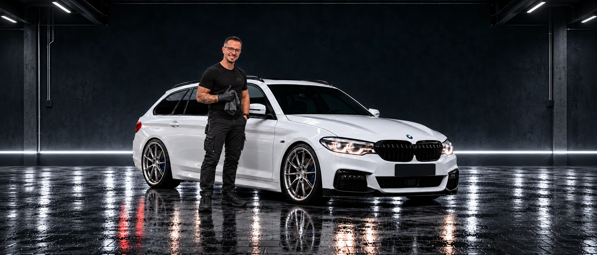
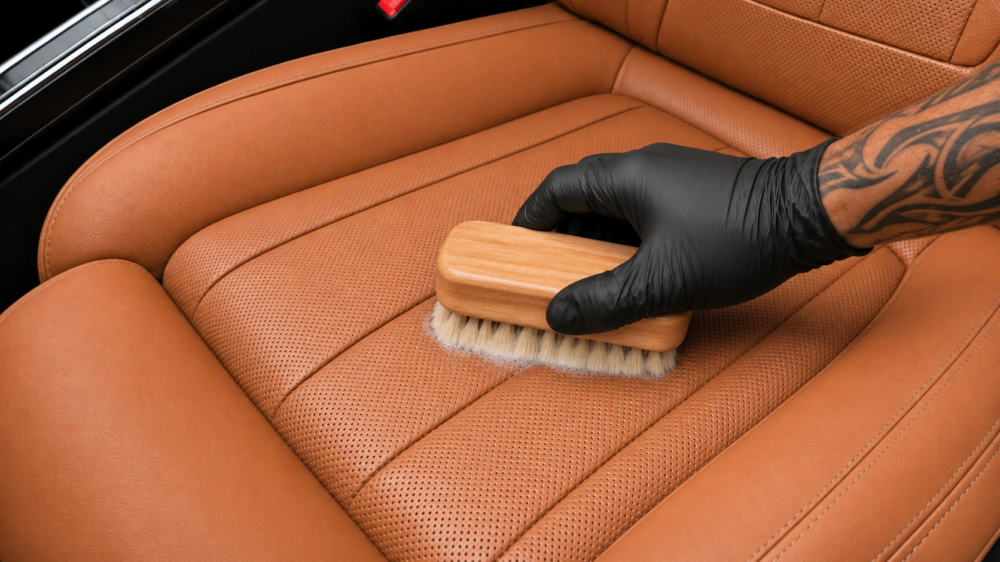

05.11.2026 · Bildvorlagen V6 · KI-Visualisierung
Neues Startbild. Korrigierte Leder-Nahaufnahme.
Hier sind die neuen Bilder, noch kein neuer Film. Die bisherige Lederfahrt in der Garage ist noch die alte Fassung und wird durch einen neuen stummen 1080p-Clip ersetzt. Der neue Video-Render ist noch nicht gestartet.
01 · Vollständige Garage

Breites Studiobild ohne ausgeblendete oder weichgezeichnete Seiten. BMW und Tim bleiben vollständig im Motiv.
02 · Leder: Hand von rechts, wenig Schaum

Neue Bildvorlage. Beide Seitenwangen ungelocht; feine Perforation nur in der Mitte. Schaum nur am Bürstenkontakt. Die Kreisbewegung muss im nächsten Video geprüft werden.
So soll die neue Fahrt ablaufen
- Die Kamera fährt um den stehenden BMW zur linken Fahrertür. Tim, Auto und Räder bleiben an ihrem Platz.
- Die vorn angeschlagene Fahrertür öffnet sich normal nach außen. Gleichzeitig fährt die Kamera durch die freie Öffnung nahe an den Fahrersitz.
- Der Sitz bleibt fest eingebaut: keine Bewegung nach oben oder hinten.
- Erst bei der Nahaufnahme kommt die Hand von rechts. Die weiche Bürste arbeitet in kleinen überlappenden Kreisen mit wenig Schaum.